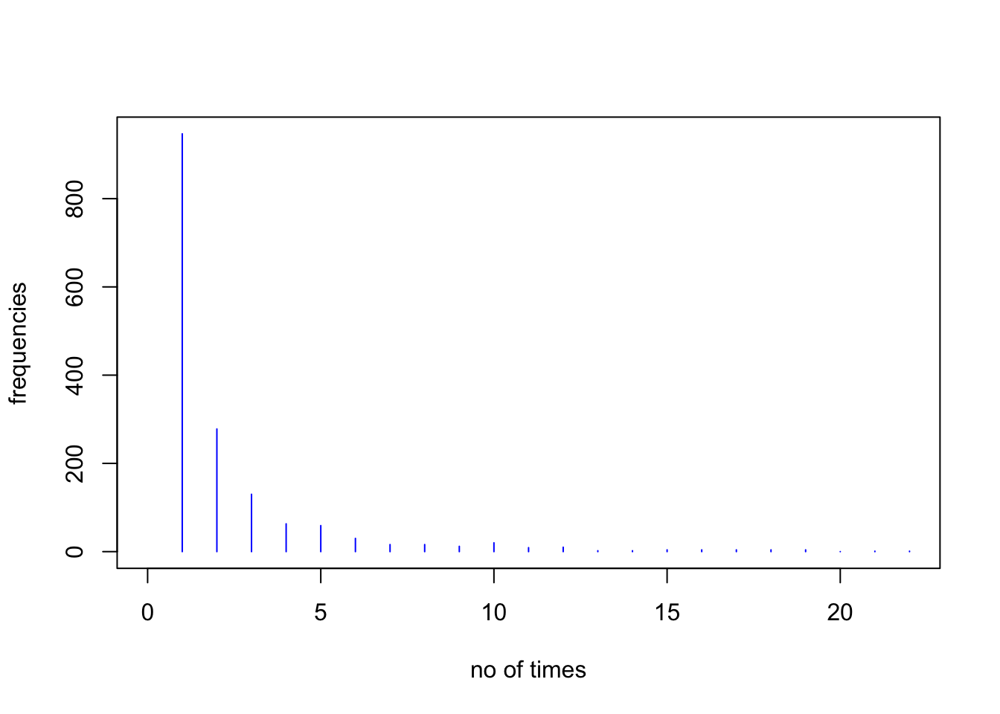
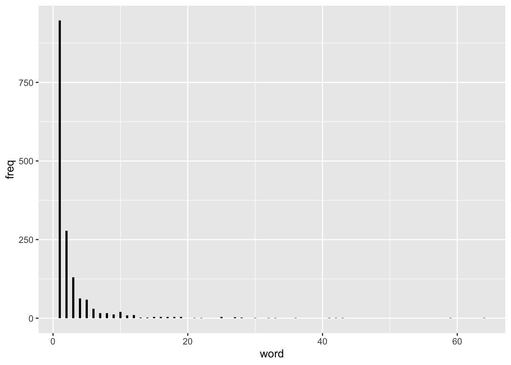
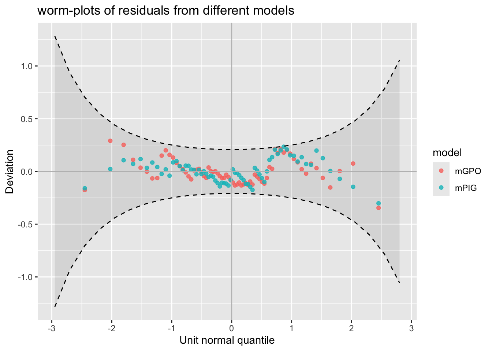

R data file:] in package gamlss.data of dimensions 64 \times 2
word: number of times a word appears in a single text
freq: frequency of the number of times a word appears in a text purpose to demonstrate the fitting of a truncated discrete distribution.
Note that the response variable word is (left) truncated at 0.
Load the data and plot them.
library(gamlss)library(gamlss2)library(gamlss.tr)library(ggplot2)library(gamlss.ggplots)data(stylo)plot(freq ~ word, data = stylo, type ="h", xlim =c(0, 22), xlab ="no of times", ylab ="frequencies", col ="blue")

# in ggplotsggplot(data=stylo, aes(x=word, y=freq))+geom_segment(mapping =aes(x=word, y=freq, xend = word, yend =0), size=1)

Create different truncated at zero count data distributions (PO, NBII, DEL, SICHEL, for example:
library(gamlss.tr)gen.trun(par =0, family = PO, type ="left")
A truncated family of distributions from PO has been generated
and saved under the names:
dPOtr pPOtr qPOtr rPOtr POtr
The type of truncation is left
and the truncation parameter is 0
gen.trun(par =0, family = PO, type ="left")
A truncated family of distributions from PO has been generated
and saved under the names:
dPOtr pPOtr qPOtr rPOtr POtr
The type of truncation is left
and the truncation parameter is 0
gen.trun(par =0, family = NBII, type ="left")
A truncated family of distributions from NBII has been generated
and saved under the names:
dNBIItr pNBIItr qNBIItr rNBIItr NBIItr
The type of truncation is left
and the truncation parameter is 0
gen.trun(par =0, family = DEL, type ="left")
A truncated family of distributions from DEL has been generated
and saved under the names:
dDELtr pDELtr qDELtr rDELtr DELtr
The type of truncation is left
and the truncation parameter is 0
gen.trun(par =0, family = SICHEL, type ="left",delta =0.001)
A truncated family of distributions from SICHEL has been generated
and saved under the names:
dSICHELtr pSICHELtr qSICHELtr rSICHELtr SICHELtr
The type of truncation is left
and the truncation parameter is 0
Fit the different truncated distributions, for example:
mPO <-gamlss2(word ~1, weights = freq, data = stylo, family = POtr, trace =FALSE)mNBII <-gamlss(word ~1, weights = freq, data = stylo, family = NBIItr, n.cyc =50, trace =FALSE)mDEL <-gamlss(word ~1, weights = freq, data = stylo,family = DELtr, n.cyc =50, trace =FALSE)mSI <-gamlss(word ~1, weights = freq, data = stylo,family = SICHELtr, n.cyc =50, trace =FALSE)
Compare the distributions using GAIC.% as in Exercise 4(e) of this Chapter.
The number of different fish species fish was recorded for 70 lakes of the world together with explanatory variable x = log lake area.
The data were analysed by Stein and Juritz (1988) using a Poisson inverse Gaussian (PIG(\mu, \sigma)) distribution for fish, with a linear model in log(lake) for \log \mu, and a constant for \sigma. Rigby analysed this data set and identified the following questions that need to be answered. Note that the same questions could apply to any regression situation where the response variable is a count and x represents a set of explanatory variables.
How does the mean of the response variable depend on texttt{x}?
Is the response variable overdispersed Poisson?
How does the variance of the response variable depend on its mean?
What is the conditional distribution of the response variable given texttt{x}?
Do the scale and shape parameters of the response variable distribution depend on texttt{x}?
Here we will model the data using different discrete distributions and consider flexible models for the distribution parameters, where any or all of them may depend on the explanatory variable log(lake). We start by fitting all available count distributions to the data including:
Poisson (PO),
double Poisson (DPO),
negative binomial types I and II (NBI, NBII),
Poisson inverse Gaussian (PIG),
Delaporte (DEL) and
Sichel (‘SICHEL’)
We first use a linear model for x=log(lake and using chooseDist() we then trying to find an appropriate distribution for the response. Note that T1 is a table containing as colunms different GAIC criteria in this case k=2, 3.84, log(n) representing AIC, \chi^2 and BIC respectively.
The Poisson distribution model has a very large BIC compared to the rest of the distributions and do not appears in the best 5 fits. We can conclude that the data are over-dispersed. The quadratic polynomial in log(lake) seems to fit slightly better than the linear term across the distributions and the smoothing only improves BIC marginally. The best distribution at this stage is the generalized Poisson GPO model with a quadratic polynomial in log(lake).
We will try now to model all other parameters as a linear function of `log(lake). (Note that the Poisson distribution has only the \mu parameter but we include the linear terms for all parameters in the formula so it can fitted for the more compicated distributions).
Modelling \log(\sigma) as a linear function of x shows that the PIG distribution is the best but in fact its BIC is not better than the BIC of the GPO distribution fitted earlier.
Now let us look at the shape of the fitted distributions and the residual of the two best model PIC and GPO.
Similar shape as expected. Now look at residuals from the two models
library(gamlss.ggplots)model_wp(mGPO, mPIG)

Finding the best distribution
From the lecture we have that in order to select an appropriate ditribution from the data we have to:
Select an appropriate class of distributions following the range of the resposnse.
Use the function chooseDist() to fit a “linear” models for both \mu and \sigma
Use GAIC to finds the best fit
Use model diagnostics to check the distribution
Here we apply tis to the rent99 data
The respoose rent is defined in the positive real so we use
library(gamlss2)da <- rent99[, -c(2,9)]# fit a linear model with all variables above to both mu and sigma m1 <-gamlss2(rent~.|., data=da, family=GA,trace=FALSE) M1 <-chooseDist(m1, type="realplus", parallel="snow", ncpus=10)